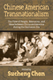
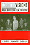
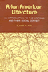
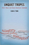
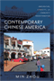

|
Between
the Lines
South Asians and Postcoloniality
edited by Bahri, Deepika and Mary Vasudeva
384 pp • 6x9 • Fall 1996
paper 978-1-56639-468-0
cloth 978-1-56639-467-3
Excerpt available |

|
Creating a Buddhist Community
A Thai Temple in Silicon Valley
Bao, Jiemin
204 pp • 5.5x8.25 • Spring 2015
paper 978-1-4399-0955-3
cloth 978-1-4399-0954-6 |

|
Locating
Filipino Americans
Ethnicity and the Cultural Politics of Space
Bonus, Rick
248 pp • 6x9 • Spring 2000
paper 978-1-56639-779-7
cloth 978-1-56639-778-0
Excerpt available |

|
Reframing Transracial Adoption
Korean Adoptees, White Parents and the Politics of Kinship
Brian, Kristi
230 pp • 6x9 • Spring 2012
paper 978-1-4399-0184-7
cloth 978-1-4399-0183-0
Excerpt available |

|
The
Cry and the Dedication
Bulosan, Carlos, edited by E. San Juan, Jr.
344 pp • 6x9 • Spring 1995
paper 978-1-56639-296-9
cloth 978-1-56639-295-2
Excerpt available |

|
On
Becoming Filipino
Selected Writings of Carlos Bulosan
Bulosan, Carlos, edited by E. San Juan, Jr.
240 pp • 5.5x8.25 • Spring 1995
paper 978-1-56639-310-2
cloth 978-1-56639-309-6 |

|
Hapa Girl
A Memoir
Chai, May-lee
232 pp • 5.5x8.25 • Spring 2007
paper 978-1-59213-616-2
cloth 978-1-59213-615-5
Excerpt available |
 |
Chinese
American Transnationalism
The Flow of People, Resources, and Ideas between China and America
during the Exclusion Era
edited by Chan, Sucheng
312 pp • 6x9 • Fall 2005
paper 978-1-59213-435-9
cloth 978-1-59213-434-2
Excerpt Available |

|
Chinese Americans and the Politics of Race and Culture
edited
by Chan, Sucheng and Madeline Y. Hsu 288 pp • 6x9 • Spring 2008
paper 978-1-59213-753-4
cloth 978-1-59213-752-7
Excerpt available |

|
Entry
Denied
Exclusion and the Chinese Community in America, 1882-1943
Chan, Sucheng
320 pp • Spring 1991
paper 978-1-56639-201-3
cloth 978-0-87722-798-4 |

|
Hmong
Means Free
Life in Laos and America
edited by Chan, Sucheng
296 pp • 6x9 • Spring 1994
paper 978-1-56639-163-4
cloth 978-1-56639-162-7
Excerpt available |

|
The
Vietnamese American 1.5 Generation
Stories of War, Revolution, Flight, and New Beginnings
edited by Chan, Sucheng
344 pp • 6x9 • Spring 2006
paper 978-1-59213-501-1
cloth 978-1-59213-500-4
Excerpt available
|

|
Smuggled
Chinese
Clandestine Immigration to the United States
Chin, Ko-lin, foreword by Douglas S. Massey
296 pp • 6x9 • Fall 1999
paper 978-1-56639-733-9
cloth 978-1-56639-732-2
Excerpt available |

|
Doing
What Had to Be Done
The Life Narrative of Dora Yum Kim
Chin, Soo-Young
272 pp • 6x9 • Spring 1999
paper 978-1-56639-694-3
cloth 978-1-56639-693-6
Excerpt available |

|
Paper
Son
One Man's Story
Chin, Tung Pok with Winifred C. Chin, introduction by K. Scott
Wong
184 pp • 5.5x8.25 • Fall 2000
paper 978-1-56639-801-5
cloth 978-1-56639-800-8
Excerpt available |

|
Hollywood
Asian
Philip Ahn and the Politics of Cross-Ethnic Performance
Chung, Hye Seung
256 pp • 6x9 • Fall 2006
paper 978-1-59213-516-5
cloth 978-1-59213-515-8
|

|
The Asian American Avant-Garde
Universalist Aspirations in Modernist Literature and Art
Clark, Audrey Wu
246 pp • 6x9 • Fall 2015
paper 978-1-4399-1227-0
cloth 978-1-4399-1226-3 |

|
The Transnational Politics of Asian Americans
edited by Collet, Christian, Pei-te Lien
Foreword by Don Nakanishi
252 pp • 6x9 • Spring 2009
paper 978-1-59213-861-6
cloth 978-1-59213-860-9
Excerpt available |

|
Literary
Gestures
The Aesthetic in Asian American Writing
edited by Davis, Rocío G. and Sue-Im Lee
248 pp • 6x9 • Fall 2005
paper 978-1-59213-365-9
cloth 978-1-59213-364-2
Excerpt Available |

|
Mulan's Legend and Legacy in China and the United States
Dong, Lan
280 pp • 6x9 • Fall 2010
paper 978-1-59213-971-2
cloth 978-1-59213-970-5
Excerpt available |

|
Treacherous Subjects
Gender, Culture, and Trans-Vietnamese Feminism
Duong, Lan P.264 pp • 6x9 • Spring 2012
paper 978-1-4399-0178-6
cloth 978-1-4399-0177-9
Excerpt available |

|
Q
& A
Queer in Asian America
edited by Eng, David L. and Alice Y. Hom
445 pp • 7x10 • Fall 1998
paper 978-1-56639-640-0
cloth 978-1-56639-639-4
Excerpt available |

|
Asian
American Panethnicity
Bridging Institutions and Identities
Espiritu, Yen Le
238 pp • 6x9 • Fall 1992
paper 978-1-56639-096-5
cloth 978-0-87722-955-1
Excerpt available |
|
Filipino
American Lives
Espiritu, Yen Le
240 pp • 6x9 • Spring 1995
paper 978-1-56639-317-1
cloth 978-1-56639-316-4
Excerpt available |

|
The
First Suburban Chinatown
The Remaking of Monterey Park, California
Fong, Timothy P.
240 pp • 6x9 • Fall 1993
paper 978-1-56639-262-4
cloth 978-1-56639-123-8
Excerpt available |

|
Organizing
Asian American Labor
The Pacific Coast Canned-Salmon Industry, 1870-1942
Friday, Chris
296 pp • 6x9 • Spring 1994
paper 978-1-56639-398-0
cloth 978-1-56639-139-9 |

|
The Day the Dancers Stayed
Performing in the Filipino/American Diaspora
Gonzalves, Theodore S.
228 pp • 5.5x8.25 • Fall 2009
paper 978-1-59213-729-9
cloth 978-1-59213-728-2
Excerpt available
|

|
San Francisco's International Hotel
Mobilizing the Filipino American Community in the Anti-Eviction Movement
Habal, Estella
256 pp • 6x9 • Spring 2008
paper 978-1-59213-446-5
cloth 978-1-59213-445-8
Excerpt available |
 |
Countervisions
Asian American Film Criticism
edited by Hamamoto, Darrell Y. and Sandra Liu
317 pp • 7x10 • Spring 2000
paper 978-1-56639-776-6
cloth 978-1-56639-775-9 |

|
The
Politics of Diversity
Immigration, Resistance, and Change in Monterey Park, California
Horton, John
296 pp • 6x9 • Fall 1995
paper 978-1-56639-328-7
cloth 978-1-56639-327-0
Excerpt available |

|
But
Still, Like Air, I'll Rise
New Asian American Plays
edited by Houston, Velina Hasu, foreword by Roberta Uno
520 pp • 6x9 • Spring 1997
paper 978-1-56639-538-0
cloth 978-1-56639-537-3
Excerpt available |

|
The
Politics of Life
edited by Houston, Velina Hasu
288 pp • 6x9 • Spring 1993
paper 978-1-56639-001-9
cloth 978-1-56639-000-2 |

|
Across
the Pacific
Asian Americans and Globalization
edited by Hu-DeHart, Evelyn
232 pp • 6x9 • Spring 1999
paper 978-1-56639-824-4
cloth 978-1-56639-710-0
Excerpt available |

|
Making a Global Immigrant Neighborhood
Brooklyn's Sunset Park
Hum, Tarry
296 pp • 6x9 • Spring 2014
paper 978-1-43991-091-7
cloth 978-1-43991-090-0 |

|
How to Be South Asian in America
Narratives of Ambivalence and Belonging
jain, anupama
288 pp • 6x9 • Spring 2011
paper 978-1-4399-0303-2
cloth 978-1-4399-0302-5
Excerpt available
|
 |
Asian
American Literature
An Introduction to the Writings and Their Social Context
Kim, Elaine H.
363 pp • Spring 1982
paper 978-0-87722-352-8
cloth 978-0-87722-260-6 |

|
The
Racial Logic of Politics
Asian Americans and Party Competition
Kim, Thomas P.
208 pp • 6x9 • Fall 2006
paper 978-1-59213-549-3
cloth 978-1-59213-548-6
|

|
Tiananmen Fictions Outside the Square
The Chinese Literary Diaspora and the Politics of Global Culture
Kong, Belinda292
pp • 6x9 • Spring 2012
paper 978-1-4399-0759-7
cloth 978-1-4399-0758-0
Excerpt available |
|
East Is West and West Is East
Gender, Culture, and Interwar Encounters between Asia and America
Kuo, Karen
220 pp • 5.5x8.25 • Fall 2012
paper 978-1-4399-0587-6
cloth 978-1-4399-0586-9
Excerpt available |

|
Recovered
Legacies
Authority and Identity in Early Asian American Literature
edited by Lawrence, Keith and Floyd Cheung
320 pp • 6x9 • Spring 2005
paper 978-1-59213-119-8
cloth 978-1-59213-118-1
Excerpt available
|
|
Asian American Plays for a New Generation
Edited by Lee, Josephine, Don Eitel, and R. A. Shiomi
336 pp • 6x9 • Spring 2011
paper 978-1-4399-0516-6
cloth 978-1-4399-0515-9
Excerpt available
|

|
Performing
Asian America
Race and Ethnicity on the Contemporary Stage
Lee, Josephine
256 pp • 6x9 • Spring 1997
paper 978-1-56639-637-0
cloth 978-1-56639-502-1
Excerpt available |

|
Re/collecting
Early Asian America
Essays in Cultural History
edited by Lee, Josephine, Imogene L. Lim and Yuko Matsukawa
384 pp • 7x10 • Spring 2002
paper 978-1-56639-964-7
cloth 978-1-56639-963-0
Excerpt available |

|
Orientals
Asian Americans in Popular Culture
Lee, Robert G.
288 pp • 6x9 • Fall 1998
paper 978-1-56639-753-7
cloth 978-1-56639-658-5
Excerpt available |

|
Claiming the Oriental Gateway
Prewar Seattle and Japanese America
Lee, Shelley Sang-Hee
272 pp • 6x9 • Fall 2010
paper 978-1-4399-0214-1
cloth 978-1-4399-0213-4
Excerpt available
|

|
Searching for Mr. Chin
Constructions of Nation and the Chinese in West Indian Literature
Lee-Loy, Anne-Marie
198 pp • 5.5x8.25 • Spring 2010
cloth 978-1-43990-130-4
Excerpt available
|

|
Making
Ethnic Choices
California's Punjabi Mexican Americans
Leonard, Karen Isaksen
352 pp • 6x9 • Spring 1992
paper 978-1-56639-202-0
cloth 978-0-87722-890-5
Excerpt available |

|
The
Making of Asian America through Political Participation
Lien, Pei-te
312 pp • 6x9 • Fall 2001
paper 978-1-56639-895-4
cloth 978-1-56639-894-7
Excerpt available |

|
Reading
the Literatures of Asian America
edited by Lim, Shirley Geok-lin and Amy Ling
384 pp • 6x9 • Fall 1992
paper 978-0-87722-936-0
cloth 978-0-87722-935-3
Excerpt available |

|
Transnational
Asian American Literature
Sites and Transits
edited by Lim, Shirley Geok-lin, John Blair Gamber, Stephen
Hong Sohn and Gina Valentino
320 pp • 6x9 • Fall 2005
paper 978-1-59213-451-9
cloth 978-1-59213-450-2
Excerpt available |

|
Yellow
Light
The Flowering of Asian American Arts
edited by Ling, Amy
384 pp • 7x10 • Fall 2000
paper 978-1-56639-817-6
cloth 978-1-56639-670-7 |

|
Chinese
St. Louis
From Enclave to Cultural Community
Ling, Huping
296 pp • 6x9 • Fall 2004
paper 978-1-59213-039-9
cloth 978-1-59213-038-2
Excerpt available |

|
Prisons and Patriots
Japanese American Wartime Citizenship, Civil Disobedience, and Historical Memory
Lyon, Cherstin M.
256 pp • 6x9 • Fall 2011
paper 978-1-4399-0187-8
cloth 978-1-4399-0186-1
Excerpt available
|

|
Desis
in the House
Indian American Youth Culture in New York City
Maira, Sunaina Marr
256 pp • 6x9 • Fall 2001
paper 978-1-56639-927-2
cloth 978-1-56639-926-5
Excerpt available |

|
Cultural
Compass
Ethnographic Explorations of Asian America
edited by Manalansan, Martin F.
272 pp • 7x10 • Spring 2000
paper 978-1-56639-773-5
cloth 978-1-56639-772-8
Excerpt available |
|
Culinary Fictions
Food in South Asian Diasporic Culture
Mannur, Anita
272 pp • 6x9 • Fall 2009
paper 978-1-4399-0078-9
cloth 978-1-4399-0077-2
Excerpt available |

|
From
Tian'anmen to Times Square
Transnational China and the Chinese Diaspora on Global Screens,
1989-1997
Marchetti, Gina
320 pp • 6x9 • Fall 2005
paper 978-1-59213-278-2
cloth 978-1-59213-277-5 |

|
Serial Fu Manchu
The Chinese Supervillain and the Spread of Yellow Peril Ideology
Mayer, Ruth
216 pp • 6x9 • Fall 2013
paper 978-1-4399-1056-6
cloth 978-1-4399-1055-9 |

|
Crossing
the Neoliberal Line
Pacific Rim Migration and the Metropolis
Mitchell, Katharyne
296 pp • 6x9 • Fall 2004
paper 978-1-59213-084-9
cloth 978-1-59213-083-2
Excerpt available |

|
The
American Diary of a Japanese Girl
An Annotated Edition
Noguchi, Yone, edited by Edward Marx and Laura E. Franey
224 pp • 6x9 • Fall 2006
paper 978-1-59213-555-4
cloth 978-1-59213-554-7
|

|
No
Sword to Bury
Japanese Americans in Hawai'i during World War II
Odo, Franklin S.
336 pp • 6x9 • Fall 2003
paper 978-1-59213-270-6
cloth 978-1-59213-207-2
Excerpt available |
|
Ethnicity and Inequality in Hawai’i
Okamura, Jonathan Y.
256 pp • 6x9 • Spring 2008
paper 978-1-59213-756-5
cloth 978-1-59213-755-8
Excerpt available |

|
Cane
Fires
The Anti-Japanese Movement in Hawaii, 1865-1945
Okihiro, Gary Y.
360 pp • 6x9 • Spring 1991
paper 978-0-87722-945-2
cloth 978-0-87722-799-1
Excerpt available |

|
The
New Asian Immigration in Los Angeles and Global Restructuring
edited by Ong, Paul, Edna Bonacich and Lucie Cheng
344 pp • 6x9 • Fall 1994
paper 978-1-56639-218-1
cloth 978-1-56639-217-4 |

|
This Is All I Choose to Tell
History and Hybridity in Vietnamese American Literature
Pelaud, Isabelle Thuy
216 pp • 5.5x8.25 • Fall 2010
paper 978-1-4399-0217-2
cloth 978-1-4399-0216-5
|

|
Picturing Model Citizens
Civility in Asian American Visual Culture
Phu, Thy
218 pp • 6.125x9.25 • Spring 2012
paper 978-1-4399-0721-4
cloth 978-1-4399-0720-7
Excerpt available |
|
Working
Feminism
Pratt, Geraldine
224 pp • 234x156mm • Spring 2004
paper 978-1-59213-264-5
cloth 978-1-59213-263-8
Excerpt available |

|
Discrepant
Histories
Translocal Essays on Filipino Cultures
edited by Rafael, Vicente L.
360 pp • 6x9 • Spring 1995
paper 978-1-56639-356-0
cloth 978-1-56639-355-3 |
 |
Fashioning Diaspora
Beauty, Femininity, and South Asian American Culture
Reddy, Vanita
280 pp • 6x9 • Spring 2016
paper 978-1-4399-1155-6
cloth 978-1-4399-1154-9
|

|
Songs
of the Caged, Songs of the Free
Music and the Vietnamese Refugee Experience
Reyes, Adelaida
248 pp • 5.5x8.25 • Spring 1999
paper 978-1-56639-686-8
cloth 978-1-56639-685-1
Excerpt available |

|
Celebrating Debutantes and Quinceañeras
Coming of Age in American Ethnic Communities
Rodriguez, Evelyn Ibatan
226 pp • 6x9 • Spring 2013
paper 978-1-4399-0628-6
cloth 978-1-4399-0627-9
|

|
The
Philippine Temptation
Dialectics of Philippines-U.S. Literary Relations
San Juan, E., Jr.
320 pp • 6x9 • Spring 1996
paper 978-1-56639-418-5
cloth 978-1-56639-417-8
Excerpt available |

|
Racial Feelings
Asian America in a Capitalist Culture of Emotion
Santa Ana, Jeffrey
272 pp • 6x9
• Spring 2015
paper 978-1-4399-1193-8
cloth 978-1-4399-1192-1 |

|
Laotian Daughters
Working toward Community, Belonging, and Environmental Justice
Shah, Bindi V.
216 pp • 6x9 • Fall 2011
paper 978-1-4399-0815-0
cloth 978-1-4399-0813-6
Excerpt available |

|
A
Part, Yet Apart
South Asians in Asian America
edited by Shankar, Lavina Dhingra and Rajini Srikanth
320 pp • 6x9 • Fall 1997
paper 978-1-56639-578-6
cloth 978-1-56639-577-9
Excerpt available |

|
Economic Citizens
A Narrative of Asian American Visibility
So, Christine
190 pp • 6x9 • Fall 2007
paper 978-1-59213-585-1
cloth 978-1-59213-584-4
Excerpt available
|

|
Helping
Out
Children's Labor in Ethnic Businesses
Song, Miri
247 pp • 5.5x8.25 • Spring 1999
paper 978-1-56639-709-4
cloth 978-1-56639-708-7
Excerpt available |
|
Constructing the Enemy
Empathy/Antipathy in U.S. Literature and Law
Srikanth, Rajini
220 pp • 6x9 • Fall 2011
paper 978-1-4399-0324-7
cloth 978-1-4399-0323-0
Excerpt available |
|
The
World Next Door
South Asian American Literature and the Idea of America
Srikanth, Rajini
304 pp • 6x9 • Fall 2004
paper 978-1-59213-081-8
cloth 978-1-59213-080-1
Excerpt available |

|
Sweating Saris
Indian Dance as Transnational Labor
Srinivasan, Priya
238 pp • 6x9 • Fall 2011
paper 978-1-4399-0430-5
cloth 978-1-4399-0429-9
Excerpt available |

|
Nisei/Sansei
Shifting Japanese American Identities and Politics
Takahashi, Jere
280 pp • 6x9 • Fall 1997
paper 978-1-56639-659-2
cloth 978-1-56639-550-2
Excerpt available |
 |
Unsettled
Cambodian Refugees in the New York City Hyperghetto
Tang, Eric
234 pp • 5.5x8.25 • Fall 2015
paper 978-1-4399-1119-8
cloth 978-1-4399-1118-1 |

|
Asian American Women's Popular Literature
Feminizing Genres and Neoliberal Belonging
Thoma, Pamela
232 pp • 6x9 • Fall 2013
paper 978-1-4399-1019-1
cloth 978-1-4399-1018-4 |

|
Positively
No Filipinos Allowed
Building Communities and Discourse
edited by Tiongson, Antonio T., Jr., Edgardo V. Gutierrez and
Ricardo V. Gutierrez, foreword by Lisa Lowe
272 pp • 6x9 • Fall 2005
paper 978-1-59213-122-8
cloth 978-1-59213-121-1
Excerpt available |
 |
Unquiet Tropes
Form, Race, and Asian American Literature
Tsou, Elda E.
224 pp • 5.5x8.5 • Spring 2015
paper 978-1-4399-1125-9
cloth 978-1-4399-1124-2 |
|
Transnationalizing Viet Nam
Community, Culture, and Politics in the Diaspora
Valverde, Kieu-Linh Caroline
198 pp • 6x9 • Fall
2012
paper 978-1-4399-0680-4
cloth 978-1-4399-0679-8
Excerpt available |

|
Pinoy Capital
The Filipino Nation in Daly City
Vergara, Jr., Benito M.
232 pp • 6x9 • Fall 2008
paper 978-1-59213-665-0
cloth 978-1-59213-664-3
Excerpt available |

|
Contemporary
Asian American Communities
Intersections and Divergences
edited by Võ, Linda Trinh and Rick Bonus
264 pp • 7x10 • Spring 2002
paper 978-1-56639-938-8
cloth 978-1-56639-937-1
Excerpt available |

|
Mobilizing
an Asian American Community
Võ, Linda Trinh
304 pp • 6x9 • Spring 2004
paper 978-1-59213-262-1
cloth 978-1-59213-261-4
Excerpt available |

|
The
Asian American Movement
Wei, William
376 pp • 6x9 • Spring 1993
paper 978-1-56639-183-2
cloth 978-1-56639-049-1
Excerpt available |

|
The
Sum of Our Parts
Mixed-Heritage Asian Americans
edited by Williams-León, Teresa and Cynthia L. Nakashima,
foreword by Michael Omi
296 pp • 7x10 • Fall 2000
paper 978-1-56639-847-3
cloth 978-1-56639-846-6
Excerpt available |

|
Ethnic Renewal in Philadelphia's Chinatown
Space, Place, and Struggle
Wilson, Kathryn E.
278 pp • 6x9 • Spring 2015
paper 978-1-4399-1215-7
cloth 978-1-4399-1214-0
|

|
Americans First
Chinese Americans and the Second World War
Wong, K. Scott
268 pp • 5.5x8.25 • Spring 2008
paper 978-1-59213-840-1
Excerpt available |

|
Claiming
America
Constructing Chinese American Identities during the Exclusion
Era
edited by Wong, K. Scott and Sucheng Chan
226 pp • 6x9 • Fall 1997
paper 978-1-56639-576-2
cloth 978-1-56639-575-5
Excerpt available |

|
Yellow
Journalist
Dispatches from Asian America
Wong, William
288 pp • 6x9 • Fall 2000
paper 978-1-56639-830-5
cloth 978-1-56639-829-9
Excerpt available |

|
Chang and Eng Reconnected
The Original Siamese Twins in American Culture
Wu, Cynthia
218 pp • 6x9 • Fall 2012
paper 978-1-4399-0869-3
cloth 978-1-4399-0868-6
Excerpt available |
|
An Immigrant Neighborhood
Interethnic and Interracial Encounters in New York before 1930
Yee, Shirley J.
256 pp • 5.5x8.25 • Fall 2011
paper 978-1-59213-128-0
cloth 978-1-59213-127-3
Excerpt available |

|
Outside the Paint
When Basketball Ruled at the Chinese Playground
Yep, Kathleen S.
216 pp • 5.5x8.25 • Spring 2009
cloth 978-1-59213-942-2
Excerpt available |
|
Musicians from a Different Shore
Asians and Asian Americans in Classical Music
Yoshihara, Mari
288 pp • 6x9 • Fall 2007
paper 978-1-59123-333-8
cloth 978-1-59123-332-1
Excerpt available |

|
To
Save China, To Save Ourselves
The Chinese Hand Laundry Alliance of New York
Yu, Renqiu
253 pp • 6x9 • Fall 1992
paper 978-1-56639-395-9
cloth 978-0-87722-996-4 |

|
The Coolie Speaks
Chinese Indentured Laborers and African Slaves in Cuba
Yun, Lisa
336 pp • 6x9 • Fall 2007
paper 978-1-59213-582-0
cloth 978-1-59213-581-3
Excerpt available |

|
Chinatown
The Socioeconomic Potential of an Urban Enclave
Zhou, Min, foreword by Alejandro Portes
316 pp • 6x9 • Spring 1992
paper 978-1-56639-337-9
cloth 978-0-87722-934-6 |
 |
Contemporary Chinese America
Immigration, Ethnicity, and Community Transformation
Zhou, Min
328 pp • 6x9 • Spring 2009
paper 978-1-59213-858-6
cloth 978-1-59213-857-9
Excerpt available |